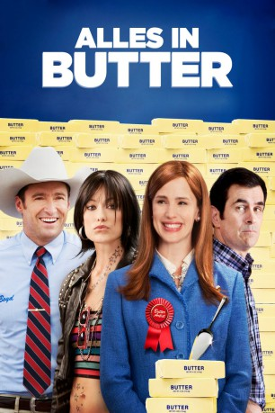

#11069 Alles in Butter
Alternativ: Butter (Englischer Titel)
 
 IMDB-Wertung: 6.2 / 10
IMDB-Wertung: 6.2 / 10  Metascore: 40
Metascore: 40 
Laura Pickler führt das Leben einer Vorbild-Amerikanerin. Ihr größter Stolz ist jedoch, dass ihr Mann Bob der amtierende Butter-Skulpturen-Champion in Iowa ist. Laura sieht darin das Sprungbrett zu Ruhm und Reichtum. Als Bob jedoch gebeten wird, als dauerhafter Champion zurückzutreten, um auch anderen eine Möglichkeit auf den Titel zu ermöglichen, ist dies für Laura zu viel. Sie bricht zusammen. In einem Wutanfall stellt sie Bob vor ihrer Teenager-Tochter bloß, woraufhin sich dieser auf eine heiße Nacht in einem Strip-Club einlässt. Vollkommen benommen beschließt Laura daraufhin, die Sache selbst in die Hand zu nehmen, und tritt selber bei der Meisterschaft an. Mögliche Konkurrenz kann sie auch nirgends erkennen. Bis die zehnjährige Destiny auftaucht, die von einer Familie in der Stadt adoptiert wurde und ein goldenes Händchen im Umgang mit Butter zu haben scheint...
Jahr: 2011
Dauer: 90 Minuten
FSK: 12
Land: USA Studio: The Weinstein CompanyTonspuren: DTS - ,
Untertitel: Deutsch,
Auflösung: 1080p (1920x824) Größe: 7587 MB
Genre: Drama, Komödie
Regisseur: Jim Field Smith
Drehbuch: Jason A. Micallef
Soundtrack: Mateo Messina
Darsteller:
 Jennifer Garner als Laura Pickler
Jennifer Garner als Laura Pickler Ty Burrell als Bob Pickler
Ty Burrell als Bob Pickler- Garrett Schenck als Orval Flanagan
 Kristen Schaal als Carol Ann Stevenson
Kristen Schaal als Carol Ann Stevenson- Jason Yudoff als Announcer
 Phyllis Smith als Nancy
Phyllis Smith als Nancy Joe Chrest als Butter Fan
Joe Chrest als Butter Fan Yara Shahidi als Destiny
Yara Shahidi als Destiny Kelly Tippens als Mrs. Moore
Kelly Tippens als Mrs. Moore Dodie Brown als June Carmichael
Dodie Brown als June Carmichael Alicia Silverstone als Jill
Alicia Silverstone als Jill Rob Corddry als Ethan
Rob Corddry als Ethan Ashley Greene als Kaitlen Pickler
Ashley Greene als Kaitlen Pickler Olivia Wilde als Brooke
Olivia Wilde als Brooke- Brett Hill als Hayden
 Hugh Jackman als Boyd Bolton
Hugh Jackman als Boyd Bolton Andrew Daly als Radio Announcer
Andrew Daly als Radio Announcer Pruitt Taylor Vince als Ned Eaton
Pruitt Taylor Vince als Ned Eaton- Gavin Casalegno als Art Class Student (uncredited)
- Pearce Chadwick als Webelo (uncredited)
 Ted Ferguson als The Minister (uncredited)
Ted Ferguson als The Minister (uncredited)- Jed Fox als Fair Attendee (uncredited)
- Jude Gavi als Fair Goer (uncredited)
- Rj Hanson als Technician (uncredited)
- Joy Kate Lawson als Fair Goer / Grande Hall Child (uncredited)
- Shelli McCollister-Fox als Fair Attendee (uncredited)
- Daniel Mignault als Art Class Kid (uncredited)
 James Paul als Museum Spectator (uncredited)
James Paul als Museum Spectator (uncredited)- Shelby Schneider als School Girl at the Fair (uncredited)
- Keri Shahidi als Biological Mother (uncredited)
- Lanie Taylor als Art Class Kid (uncredited)
 Jody Thompson als Random Diner (uncredited)
Jody Thompson als Random Diner (uncredited)- Judy Leavell als Helen Flanagan
- Deana Ricks als Butter Fan's Wife
- Jeanne Evans als Mrs. Gunderson
- Cindy Creekmore als Danielle Mattingly
- Christine Scheller als Transitional Home Worker
- Corena Chase als Mrs. Schram
- Mark Oliver als Martin Caswell
- Michael C. 'Mike' Allen als Corporate Employee (uncredited)
- Jennifer Benton als Car Buyer (uncredited)
 Charlotte Biggs als State Fair Patron (uncredited)
Charlotte Biggs als State Fair Patron (uncredited)- Heather Cates als Laura's Fan (uncredited)
- Cassie Tobin Chappell als Extra (uncredited)
- Tracy Chappell als Extra (uncredited)
- Marian Drey als State Fair Patron (uncredited)
- Laine Dubroc als Band Geek (uncredited)
- Kevin A. Green als State Fair Goer (uncredited)
- Rachel Greene als Miss Dairy - Betsy Lou Holt (uncredited)
- Lindsey Hallen als Transitional Home School Kid (uncredited)
Datei: X:\NEU\Alles in Butter (2011, FSK12, 1920x824).mkv seit 24.04.2019
 Es gibt insgesamt 187 Filme in der Gruppe 'NEU'
Es gibt insgesamt 187 Filme in der Gruppe 'NEU'